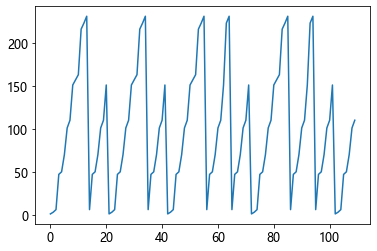
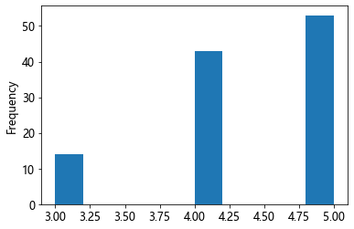
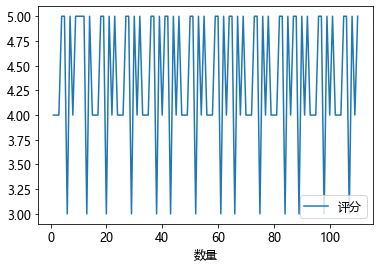
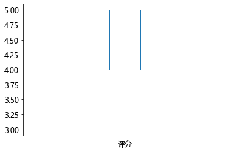

Pandas 基础快速了解和查询
Pandas 是 Python 的核心数据分析支持库, 基于 NumPy 创建, 它使 python 成为强大而高效的数据分析环境
一, 数据结构
pandas 的数据结构是基于 numpy 的, 因此其有着 numpy 的基因, 许多操作和大部分函数与 numpy 类似
pandas 的数据结构其实是 numpy 数组数据对象 array 的容器, 在 pandas 中有了索引结构, 可以利用索引来取 array 或 array 中的元素
pandas 中最重要的数据结构是 Series 和 DataFrame
1, 创建 Series 和 DataFrame
创建时若不指定索引, 将自动生成(从 0 开始)
Series 是一维, 只有行索引, 而 DataFrame 有行和列索引
创建方式灵活多变, 可以查看参数, 根据要求传参进行创建
import numpy as np
import pandas as pd
s = pd.Series(range(3))
s
0 0
1 1
2 2
dtype: int64
df = pd.DataFrame(range(3))
print(df)
0
0 0
1 1
2 2
s.values
array([0, 1, 2], dtype=int64)
df.values
array([[0],
[1],
[2]], dtype=int64)
可见，pandas 的数据结构，是 numpy 的 array 对象的容器，着意味着 pandas 在处理数据时，可以使用 numpy 的所有函数和方法
s = pd.Series(range(3), index=list('abc'))
s
a 0
b 1
c 2
dtype: int64
df = pd.DataFrame({'A': range(3), 'B': list('jkl')}, index=list('abc'))
print(df)
A B
a 0 j
b 1 k
c 2 l
dict_1 = {'a': 0, 'b': 1, 'c': 2}
dict_2 = {'a': range(3), 'b': list('jkl')}
s = pd.Series(dict_1)
s
a 0
b 1
c 2
dtype: int64
df1 = pd.DataFrame(dict_1, index=['A'])
print(df1)
a b c
A 0 1 2
df2 = pd.DataFrame(dict_2)
print(df2)
a b
0 0 j
1 1 k
2 2 l
# df2 每一列是一个类型的 array 对象
df2["a"].values, df2["b"].values
(array([0, 1, 2], dtype=int64), array(['j', 'k', 'l'], dtype=object))
2, Series 和 DataFrame 的常用属性
大部分属性和 numpy 一样
s = pd.Series(1, index=list('abc'))
s
a 1
b 1
c 1
dtype: int64
dict_3 = {'a': range(3), 'b': list('jkl')}
df = pd.DataFrame(dict_3)
print(df)
a b
0 0 j
1 1 k
2 2 l
# 查看形状, 形状不包括 索引
s.shape, df.shape
((3,), (3, 2))
# 获取索引
s.index, df.index, df.columns
(Index(['a', 'b', 'c'], dtype='object'),
RangeIndex(start=0, stop=3, step=1),
Index(['a', 'b'], dtype='object'))
# 查看元素个数
s.size, df.size
(3, 6)
# 查看数据类型
s.dtype, df.dtypes
(dtype('int64'),
a int64
b object
dtype: object)
# 查看值
s.values, df.values, df['a'].values
(array([1, 1, 1], dtype=int64),
array([[0, 'j'],
[1, 'k'],
[2, 'l']], dtype=object),
array([0, 1, 2], dtype=int64))
3, Series 和 DataFrame 结构理解
从上述可以看出, pandas 数据结构的值, 是一个 array 对象. 对于 df, 每一列的值取出来也是一个 array 对象, 并且每一列可以是不同的数据类型
需要注意的是, DataFrame 每一列取出来, 整体是一个 Series , 因此 DataFrame 又可以看成 Series 的容器
s = pd.Series(1, index=list('abc'))
dict_3 = {'a': range(3), 'b': list('jkl')}
df = pd.DataFrame(dict_3)
type(s), type(df['a']), type(df)
(pandas.core.series.Series,
pandas.core.series.Series,
pandas.core.frame.DataFrame)
Series 和 DataFrame 可以有多层索引
s.index = [['a', 'b', 'c'], [1, 2, 3]]
s
a 1 1
b 2 1
c 3 1
dtype: int64
df.index = [['a', 'b', 'c'], [1, 2, 3]]
print(df)
a b
a 1 0 j
b 2 1 k
c 3 2 l
二, 数据结构操作, 处理与计算
1, 查看 Series 和 DataFrame 数据信息常用方法
a = np.random.randint(1, 9, (6, 2))
s = pd.Series(a[:, 0])
s
0 4
1 7
2 4
3 8
4 1
5 8
dtype: int32
df = pd.DataFrame(a)
print(df)
0 1
0 4 4
1 7 4
2 4 8
3 8 3
4 1 3
5 8 1
# 查看前 5 行(默认)
s.head()
print(df.head())
0 1
0 4 4
1 7 4
2 4 8
3 8 3
4 1 3
# 查看后 5 行(默认)
s.tail()
print(df.tail())
0 1
1 7 4
2 4 8
3 8 3
4 1 3
5 8 1
# 查看详情, Series 没有该方法
df.info()
<class 'pandas.core.frame.DataFrame'>
RangeIndex: 6 entries, 0 to 5
Data columns (total 2 columns):
# Column Non-Null Count Dtype
--- ------ -------------- -----
0 0 6 non-null int32
1 1 6 non-null int32
dtypes: int32(2)
memory usage: 176.0 bytes
# 查看统计量
s.describe()
print(df.describe())
0 1
count 6.000000 6.000000
mean 5.333333 3.833333
std 2.804758 2.316607
min 1.000000 1.000000
25% 4.000000 3.000000
50% 5.500000 3.500000
75% 7.750000 4.000000
max 8.000000 8.000000
2, 数据的直接计算
Series 和 DataFrame 的数据可以像 numpy 的数组一样直接进行计算, 索引相同的行、列进行计算, 索引不同的 NaN 填充
a = np.random.randint(1, 9, (6, 2))
s = pd.Series(a[:, 0])
df = pd.DataFrame(a)
print(df)
0 1
0 6 2
1 1 6
2 5 1
3 3 2
4 5 5
5 2 6
df1 = pd.DataFrame(a, columns=[1, 'b'])
print(df1 * df)
0 1 b
0 NaN 12 NaN
1 NaN 6 NaN
2 NaN 5 NaN
3 NaN 6 NaN
4 NaN 25 NaN
5 NaN 12 NaN
s
0 6
1 1
2 5
3 3
4 5
5 2
dtype: int32
s1 = pd.Series(a[:, 0], index=['a', 1, 2, 3, 4, 5])
s1
a 6
1 1
2 5
3 3
4 5
5 2
dtype: int32
s**2 + s1
0 NaN
1 2.0
2 30.0
3 12.0
4 30.0
5 6.0
a NaN
dtype: float64
# 笛卡儿积展开
print(s + df)
0 1 2 3 4 5
0 12 3 NaN NaN NaN NaN
1 7 7 NaN NaN NaN NaN
2 11 2 NaN NaN NaN NaN
3 9 3 NaN NaN NaN NaN
4 11 6 NaN NaN NaN NaN
5 8 7 NaN NaN NaN NaN
3, Series 和 DataFrame 下标和索引切片操作
3.01, Series 和 DataFrame 下标切片取值
Series 和 DataFrame 下标切片取值有许多不同之处
s1 = pd.Series(a[:, 0], index=['a', 1, 2, 3, 4, 5])
s1
a 6
1 1
2 5
3 3
4 5
5 2
dtype: int32
a = np.random.randint(1, 9, (6, 2))
df1 = pd.DataFrame(a, columns=[1, 'b'])
print(df1)
1 b
0 6 5
1 3 8
2 8 7
3 1 5
4 7 4
5 6 3
# 此方法 DataFrame 只能取行, 不能取列
s1[1:3]
1 1
2 5
dtype: int32
print(df1[0:2])
1 b
0 6 5
1 3 8
s1[[1, 4]]
1 1
4 5
dtype: int32
同 numpy 一样, 可以条件取值, 此方法常用来筛选和重新赋值等
s1[s1>4]
a 6
2 5
4 5
dtype: int32
print(df1[df1>5])
1 b
0 6.0 NaN
1 NaN 8.0
2 8.0 7.0
3 NaN NaN
4 7.0 NaN
5 6.0 NaN
print(df1[df1 == 4])
1 b
0 NaN NaN
1 NaN NaN
2 NaN NaN
3 NaN NaN
4 NaN 4.0
5 NaN NaN
3.02, Series 和 DataFrame 索引切片取值
索引切片取值, 左右都包含
s1 = pd.Series(a[:, 0], index=['a', 1, 2, 3, 4, 5])
s1
a 6
1 3
2 8
3 1
4 7
5 6
dtype: int32
a = np.random.randint(1, 9, (6, 2))
df1 = pd.DataFrame(a, columns=[1, 'b'])
print(df1)
1 b
0 3 5
1 7 3
2 8 7
3 7 6
4 3 7
5 5 4
# 需要将索引转换类型
s1.index = s1.index.astype(str)
df1.index = df1.index.astype(str)
s1['a':'2']
a 6
1 3
2 8
dtype: int32
print(df1['1':'3'])
1 b
1 7 3
2 8 7
3 7 6
print(df1['1':'3'][[1]])
1
1 7
2 8
3 7
df1['b']
0 5
1 3
2 7
3 6
4 7
5 4
Name: b, dtype: int32
print(df1[['b', 1]])
b 1
0 5 3
1 3 7
2 7 8
3 6 7
4 7 3
5 4 5
3.03, 用 iloc 方法取值(推荐)
上述的取值太复杂麻烦, iloc 方法传入下标取值更方便且条理清晰. 存在多层索引时, iloc 按最内层索引取值
s1 = pd.Series(a[:, 0], index=['a', 1, 2, 3, 4, 5])
s1
a 3
1 7
2 8
3 7
4 3
5 5
dtype: int32
a = np.random.randint(1, 9, (6, 2))
df1 = pd.DataFrame(a, columns=[1, 'b'])
print(df1)
1 b
0 8 8
1 6 2
2 1 6
3 6 3
4 8 3
5 3 8
# 右不包含
s1.iloc[0:3]
a 3
1 7
2 8
dtype: int32
print(df1.iloc[0:5:2])
1 b
0 8 8
2 1 6
4 8 3
print(df1.iloc[[1, 4, 2], 0:])
1 b
1 6 2
4 8 3
2 1 6
3.04, 用 loc 方法
loc 方法取值左右都包含, 传入索引标签取值
s1 = pd.Series(a[:, 0], index=['a', 1, 2, 3, 4, 5])
s1
a 8
1 6
2 1
3 6
4 8
5 3
dtype: int32
a = np.random.randint(1, 9, (6, 2))
df1 = pd.DataFrame(a, columns=[1, 'b'])
print(df1)
1 b
0 4 3
1 6 4
2 1 6
3 6 2
4 6 1
5 2 7
# 需要将索引转换类型
s1.index = s1.index.astype(str)
df1.index = df1.index.astype(str)
s1.loc['a':'2']
a 8
1 6
2 1
dtype: int32
df1.loc['1':'3', 'b']
1 4
2 6
3 2
Name: b, dtype: int32
3.05, 利用切片修改数据
利用切片修改数据, 其实就是取值重新赋值
import numpy as np
import pandas as pd
df = pd.DataFrame(np.random.rand(5, 4),
index=list('abcde'),
columns=list('ABCD'))
print(df[df>0.5])
A B C D
a 0.908869 NaN NaN 0.584259
b NaN NaN 0.940409 NaN
c 0.947715 0.898426 0.745999 NaN
d NaN 0.855820 NaN 0.742919
e NaN NaN NaN 0.593532
# 将大于 0.5 的数据换成 nan
df[df>0.5] = np.nan
print(df)
A B C D
a NaN 0.019952 0.004443 NaN
b 0.391594 0.406059 NaN 0.021655
c NaN NaN NaN 0.067905
d 0.238486 NaN 0.232429 NaN
e 0.378054 0.422029 0.386046 NaN
# 将 A 列全部改成 1 , 增加一列 E, 值为 0
df['A'] = 1 # 与 df.A = 1 等价
df['E'] = 0
print(df)
A B C D E
a 1 0.019952 0.004443 NaN 0
b 1 0.406059 NaN 0.021655 0
c 1 NaN NaN 0.067905 0
d 1 NaN 0.232429 NaN 0
e 1 0.422029 0.386046 NaN 0
# 行列值互换
df.loc[['a', 'c'], ['A', 'C']] = df.loc[['c', 'a'], ['C', 'A']].to_numpy()
print(df)
A B C D E
a NaN 0.019952 1.000000 NaN 0
b 1.000000 0.406059 NaN 0.021655 0
c 0.004443 NaN 1.000000 0.067905 0
d 1.000000 NaN 0.232429 NaN 0
e 1.000000 0.422029 0.386046 NaN 0
# 只要 B 不为 nan 的数据
print(df[df['B'] == df['B']])
A B C D E
a NaN 0.019952 1.000000 NaN 0
b 1.0 0.406059 NaN 0.021655 0
e 1.0 0.422029 0.386046 NaN 0
三, Series 和 DataFrame 的处理和计算函数
1, 索引
在 pandas 里, 索引非常重要, 一个行索引, 通常就是数据的一条记录(例如一个人的信息), 一个列索引就是数据的一个特征(例如某个人的性别, 年龄等), 通过索引能够更方便数据处理与计算
import numpy as np
import pandas as pd
s = pd.Series(np.random.rand(4), index=list('abcd'))
s
a 0.930171
b 0.263544
c 0.684870
d 0.702820
dtype: float64
df = pd.DataFrame(np.random.rand(4, 4),
index=list('abcd'),
columns=list('ABCD'))
print(df)
A B C D
a 0.236401 0.972351 0.030862 0.438897
b 0.774498 0.670181 0.379171 0.941319
c 0.701424 0.732319 0.882208 0.527572
d 0.442419 0.597335 0.258880 0.420447
reindex 索引重排, 新增的索引 nan 填充, 缺少索引的数据舍弃
# 新增 e 舍弃 d, 有许多参数可以调节
s1 = s.reindex(list('bcae'))
s1
b 0.263544
c 0.684870
a 0.930171
e NaN
dtype: float64
df2 = df.reindex(columns=list('BCAE'))
print(df2)
B C A E
a 0.972351 0.030862 0.236401 NaN
b 0.670181 0.379171 0.774498 NaN
c 0.732319 0.882208 0.701424 NaN
d 0.597335 0.258880 0.442419 NaN
sort_index 索引排序
# 默认 True 升序, 许多参数可调, DataFrame 只排行索引
s2 = s.sort_index(ascending=False)
s2
d 0.702820
c 0.684870
b 0.263544
a 0.930171
dtype: float64
df2 = df.sort_index(ascending=False)
print(df2)
A B C D
d 0.442419 0.597335 0.258880 0.420447
c 0.701424 0.732319 0.882208 0.527572
b 0.774498 0.670181 0.379171 0.941319
a 0.236401 0.972351 0.030862 0.438897
rename, set_index, reset_index 设置索引
# 注意参数及传参方式
s3 = s.rename(index={'a': 'f'})
s3
f 0.930171
b 0.263544
c 0.684870
d 0.702820
dtype: float64
df3 = df.rename(lambda x: x + x)
print(df3)
A B C D
aa 0.236401 0.972351 0.030862 0.438897
bb 0.774498 0.670181 0.379171 0.941319
cc 0.701424 0.732319 0.882208 0.527572
dd 0.442419 0.597335 0.258880 0.420447
# Series 没有此方法
df4 = df.set_index([['a','b','c','d'], [1, 2, 3, 4]])
print(df4)
A B C D
a 1 0.236401 0.972351 0.030862 0.438897
b 2 0.774498 0.670181 0.379171 0.941319
c 3 0.701424 0.732319 0.882208 0.527572
d 4 0.442419 0.597335 0.258880 0.420447
# 可以将某列设为索引, 默认不保留原列, 可设参数 drop 保留
df5 = df.set_index('A')
print(df5)
B C D
A
0.236401 0.972351 0.030862 0.438897
0.774498 0.670181 0.379171 0.941319
0.701424 0.732319 0.882208 0.527572
0.442419 0.597335 0.258880 0.420447
# 将索引设为列(drop=True将其删除), 多层索引时可选某层
df6 = df4.reset_index(level=1)
print(df6)
level_1 A B C D
a 1 0.236401 0.972351 0.030862 0.438897
b 2 0.774498 0.670181 0.379171 0.941319
c 3 0.701424 0.732319 0.882208 0.527572
d 4 0.442419 0.597335 0.258880 0.420447
df7 = df5.reset_index()
print(df7)
A B C D
0 0.236401 0.972351 0.030862 0.438897
1 0.774498 0.670181 0.379171 0.941319
2 0.701424 0.732319 0.882208 0.527572
3 0.442419 0.597335 0.258880 0.420447
# 索引可以设置名字, 设置索引还可以通过获取索引重新赋值
# DataFrame 还可以转置
df5.index.name
'A'
df5.index = list('abcd') # 重设索引后, 索引名消失
print(df5)
B C D
a 0.972351 0.030862 0.438897
b 0.670181 0.379171 0.941319
c 0.732319 0.882208 0.527572
d 0.597335 0.258880 0.420447
print(df5.T)
a b c d
B 0.972351 0.670181 0.732319 0.597335
C 0.030862 0.379171 0.882208 0.258880
D 0.438897 0.941319 0.527572 0.420447
多层索引
ar = [['a', 'b', 'c'], [1, 2, 3]]
tup = list(zip(*ar))
pd.MultiIndex.from_tuples(tup)
MultiIndex([('a', 1),
('b', 2),
('c', 3)],
)
index = pd.MultiIndex.from_product(ar)
s = pd.Series(range(9), index=index)
s
a 1 0
2 1
3 2
b 1 3
2 4
3 5
c 1 6
2 7
3 8
dtype: int64
pd.MultiIndex.from_frame(pd.DataFrame(np.random.randint(1, 9, (2, 3))))
MultiIndex([(6, 5, 3),
(8, 1, 3)],
names=[0, 1, 2])
2, 增删与合并数据
import numpy as np
import pandas as pd
df = pd.DataFrame(np.random.randint(1, 9, (4, 5)))
print(df)
0 1 2 3 4
0 4 8 5 3 7
1 7 3 5 2 4
2 3 2 5 7 2
3 1 2 4 8 7
insert 在指定位置前插入数据
# Series 没有该方法
df.insert(2, 'A', 1)
print(df)
0 1 A 2 3 4
0 4 8 1 5 3 7
1 7 3 1 5 2 4
2 3 2 1 5 7 2
3 1 2 1 4 8 7
append 在数据最后增加数据
df1 = pd.DataFrame(np.random.rand(4, 4),
index=list('abcd'),
columns=list('ABCD'))
print(df1)
A B C D
a 0.748362 0.049567 0.603201 0.383037
b 0.658722 0.225040 0.107199 0.416646
c 0.024967 0.161487 0.338823 0.889825
d 0.584625 0.582264 0.228898 0.817555
# Series 只能传 Series
df.iloc[0].append(pd.Series(8))
0 4
1 8
A 1
2 5
3 3
4 7
0 8
dtype: int64
# DataFrame 可以在行后面增加, 也可在列后面新增
print(df.append([1]))
0 1 A 2 3 4
0 4 8.0 1.0 5.0 3.0 7.0
1 7 3.0 1.0 5.0 2.0 4.0
2 3 2.0 1.0 5.0 7.0 2.0
3 1 2.0 1.0 4.0 8.0 7.0
0 1 NaN NaN NaN NaN NaN
print(df.append(df1, ignore_index=True))
0 1 A 2 3 4 B C D
0 4.0 8.0 1.000000 5.0 3.0 7.0 NaN NaN NaN
1 7.0 3.0 1.000000 5.0 2.0 4.0 NaN NaN NaN
2 3.0 2.0 1.000000 5.0 7.0 2.0 NaN NaN NaN
3 1.0 2.0 1.000000 4.0 8.0 7.0 NaN NaN NaN
4 NaN NaN 0.748362 NaN NaN NaN 0.049567 0.603201 0.383037
5 NaN NaN 0.658722 NaN NaN NaN 0.225040 0.107199 0.416646
6 NaN NaN 0.024967 NaN NaN NaN 0.161487 0.338823 0.889825
7 NaN NaN 0.584625 NaN NaN NaN 0.582264 0.228898 0.817555
drop 删除指定数据
df['A'].drop(1), df.drop(1, axis=1)
(0 1
2 1
3 1
Name: A, dtype: int64,
0 A 2 3 4
0 4 1 5 3 7
1 7 1 5 2 4
2 3 1 5 7 2
3 1 1 4 8 7)
concat 主要用于行索引的合并
print(df)
0 1 A 2 3 4
0 4 8 1 5 3 7
1 7 3 1 5 2 4
2 3 2 1 5 7 2
3 1 2 1 4 8 7
print(df1)
A B C D
a 0.748362 0.049567 0.603201 0.383037
b 0.658722 0.225040 0.107199 0.416646
c 0.024967 0.161487 0.338823 0.889825
d 0.584625 0.582264 0.228898 0.817555
# 默认按列索引合并, 保留合并后的全部索引, 缺失用 nan 填充
# join 参数可控制合并的方式: inner 只留下都有的索引
print(pd.concat([df, df1]))
0 1 A 2 3 4 B C D
0 4.0 8.0 1.000000 5.0 3.0 7.0 NaN NaN NaN
1 7.0 3.0 1.000000 5.0 2.0 4.0 NaN NaN NaN
2 3.0 2.0 1.000000 5.0 7.0 2.0 NaN NaN NaN
3 1.0 2.0 1.000000 4.0 8.0 7.0 NaN NaN NaN
a NaN NaN 0.748362 NaN NaN NaN 0.049567 0.603201 0.383037
b NaN NaN 0.658722 NaN NaN NaN 0.225040 0.107199 0.416646
c NaN NaN 0.024967 NaN NaN NaN 0.161487 0.338823 0.889825
d NaN NaN 0.584625 NaN NaN NaN 0.582264 0.228898 0.817555
df2 = pd.DataFrame(np.random.rand(5, 4),
index=list('abcde'),
columns=list('BCDE'))
print(df2)
B C D E
a 0.061604 0.505149 0.247496 0.474912
b 0.431163 0.828570 0.302236 0.695153
c 0.238852 0.998520 0.516351 0.665134
d 0.383425 0.684282 0.857654 0.621860
e 0.186235 0.006509 0.612608 0.875893
print(pd.concat([df1, df2], join='inner'))
B C D
a 0.049567 0.603201 0.383037
b 0.225040 0.107199 0.416646
c 0.161487 0.338823 0.889825
d 0.582264 0.228898 0.817555
a 0.061604 0.505149 0.247496
b 0.431163 0.828570 0.302236
c 0.238852 0.998520 0.516351
d 0.383425 0.684282 0.857654
e 0.186235 0.006509 0.612608
join 主要用于行索引的合并
# 默认以左边(df1)为基准, 相同列名需要加以区分
# how 参数: outer 全保留, inner 只保留共同部分
print(df1.join(df2, lsuffix='_1', rsuffix='_2'))
A B_1 C_1 D_1 B_2 C_2 D_2 \
a 0.748362 0.049567 0.603201 0.383037 0.061604 0.505149 0.247496
b 0.658722 0.225040 0.107199 0.416646 0.431163 0.828570 0.302236
c 0.024967 0.161487 0.338823 0.889825 0.238852 0.998520 0.516351
d 0.584625 0.582264 0.228898 0.817555 0.383425 0.684282 0.857654
E
a 0.474912
b 0.695153
c 0.665134
d 0.621860
print(df1.join(df2, how='outer', lsuffix='_1', rsuffix='_2'))
A B_1 C_1 D_1 B_2 C_2 D_2 \
a 0.748362 0.049567 0.603201 0.383037 0.061604 0.505149 0.247496
b 0.658722 0.225040 0.107199 0.416646 0.431163 0.828570 0.302236
c 0.024967 0.161487 0.338823 0.889825 0.238852 0.998520 0.516351
d 0.584625 0.582264 0.228898 0.817555 0.383425 0.684282 0.857654
e NaN NaN NaN NaN 0.186235 0.006509 0.612608
E
a 0.474912
b 0.695153
c 0.665134
d 0.621860
e 0.875893
merge 合并
df1 = pd.DataFrame({'K': ['K0', 'K1', 'K2', 'K3'],
'A': ['A0', 'A1', 'M2', 'M3'],
'B': ['B0', 'B1', 'B2', 'B3']})
print(df1)
K A B
0 K0 A0 B0
1 K1 A1 B1
2 K2 M2 B2
3 K3 M3 B3
df2 = pd.DataFrame({'K': ['K0', 'K1', 'K4', 'K5'],
'C': ['C0', 'C1', 'M2', 'M3'],
'D': ['D0', 'D1', 'D2', 'D3']})
print(df2)
K C D
0 K0 C0 D0
1 K1 C1 D1
2 K4 M2 D2
3 K5 M3 D3
# 默认 inner, 全部列都保留,
# 但只保留两者都有的列(K),且列内容相同(K0,K1)的 行, 行索引都舍弃
print(pd.merge(df1, df2))
K A B C D
0 K0 A0 B0 C0 D0
1 K1 A1 B1 C1 D1
# 可以选择以某一个为基准, 需要合并的列内容, 以及保留某一个的索引
print(pd.merge(df1, df2, how='left')) # 以 df1 为准, 匹配不上的保留 df1
K A B C D
0 K0 A0 B0 C0 D0
1 K1 A1 B1 C1 D1
2 K2 M2 B2 NaN NaN
3 K3 M3 B3 NaN NaN
# df1 的 A 列与 df2 的 C 列有内容相同需要合并
print(pd.merge(df1, df2, left_on='A', right_on='C'))
K_x A B K_y C D
0 K2 M2 B2 K4 M2 D2
1 K3 M3 B3 K5 M3 D3
3, 数据选择与处理
import numpy as np
import pandas as pd
np.random.seed(0)
df = pd.DataFrame(np.random.randint(1, 9, (6, 6)),
index=list('abcdef'),
columns=list('ABCDEF'))
print(df)
A B C D E F
a 5 8 6 1 4 4
b 4 8 2 4 6 3
c 5 8 7 1 1 5
d 3 2 7 8 8 7
e 1 2 6 2 6 1
f 2 5 4 1 4 6
sample 随机选择数据
# 可以指定数量, 也可以按比例选
df.iloc[0].sample(2) # Series 也可
E 4
B 8
Name: a, dtype: int32
print(df.sample(3))
A B C D E F
a 5 8 6 1 4 4
b 4 8 2 4 6 3
c 5 8 7 1 1 5
print(df.sample(frac=0.5, axis=1))
F C D
a 4 6 1
b 3 2 4
c 5 7 1
d 7 7 8
e 1 6 2
f 6 4 1
where 按条件选择数据, 且可替换, 替换的是条件之外的数据
df.A.where(df.A>3) # Series 也可
a 5.0
b 4.0
c 5.0
d NaN
e NaN
f NaN
Name: A, dtype: float64
df1 = df.where(df>1)
print(df1)
A B C D E F
a 5.0 8 6 NaN 4.0 4.0
b 4.0 8 2 4.0 6.0 3.0
c 5.0 8 7 NaN NaN 5.0
d 3.0 2 7 8.0 8.0 7.0
e NaN 2 6 2.0 6.0 NaN
f 2.0 5 4 NaN 4.0 6.0
print(df.where(df==1, lambda x: x*x))
A B C D E F
a 25 64 36 1 16 16
b 16 64 4 16 36 9
c 25 64 49 1 1 25
d 9 4 49 64 64 49
e 1 4 36 4 36 1
f 4 25 16 1 16 36
isin 生成布尔数组来选择数据
values = [3, 5, 7, 'a', 'c']
df.C.isin(values)
a False
b False
c True
d True
e False
f False
Name: C, dtype: bool
df.A[df.C.isin(values)]
c 5
d 3
Name: A, dtype: int32
print(df[df.isin(values)])
A B C D E F
a 5.0 NaN NaN NaN NaN NaN
b NaN NaN NaN NaN NaN 3.0
c 5.0 NaN 7.0 NaN NaN 5.0
d 3.0 NaN 7.0 NaN NaN 7.0
e NaN NaN NaN NaN NaN NaN
f NaN 5.0 NaN NaN NaN NaN
print(df[df.index.isin(values)])
A B C D E F
a 5 8 6 1 4 4
c 5 8 7 1 1 5
isna( isnull ) 和 notna ( notnull ) 生成布尔数组
# 可以 pd 调用, 也可 DataFrame 或 Series 调用
pd.isna(df1.D)
a True
b False
c True
d False
e False
f True
Name: D, dtype: bool
df1.D.isnull()
a True
b False
c True
d False
e False
f True
Name: D, dtype: bool
print(df1.isna())
A B C D E F
a False False False True False False
b False False False False False False
c False False False True True False
d False False False False False False
e True False False False False True
f False False False True False False
dropna 删除 nan, fillna 将 nan 填充
print(df1)
A B C D E F
a 5.0 8 6 NaN 4.0 4.0
b 4.0 8 2 4.0 6.0 3.0
c 5.0 8 7 NaN NaN 5.0
d 3.0 2 7 8.0 8.0 7.0
e NaN 2 6 2.0 6.0 NaN
f 2.0 5 4 NaN 4.0 6.0
# 默认有 nan 的行就删除, 参数 all: 全部 nan 才删除
df1.A.dropna() # Series 也可
a 5.0
b 4.0
c 5.0
d 3.0
f 2.0
Name: A, dtype: float64
print(df1.dropna())
A B C D E F
b 4.0 8 2 4.0 6.0 3.0
d 3.0 2 7 8.0 8.0 7.0
print(df1.dropna(axis=1, how='all'))
A B C D E F
a 5.0 8 6 NaN 4.0 4.0
b 4.0 8 2 4.0 6.0 3.0
c 5.0 8 7 NaN NaN 5.0
d 3.0 2 7 8.0 8.0 7.0
e NaN 2 6 2.0 6.0 NaN
f 2.0 5 4 NaN 4.0 6.0
# 给定填充值, 默认全部填充,
# 可以指定填充数, 填充方式
df1.A.fillna(0) # Series 也可
a 5.0
b 4.0
c 5.0
d 3.0
e 0.0
f 2.0
Name: A, dtype: float64
print(df1.fillna(0))
A B C D E F
a 5.0 8 6 0.0 4.0 4.0
b 4.0 8 2 4.0 6.0 3.0
c 5.0 8 7 0.0 0.0 5.0
d 3.0 2 7 8.0 8.0 7.0
e 0.0 2 6 2.0 6.0 0.0
f 2.0 5 4 0.0 4.0 6.0
print(df1.fillna(0, limit=1)) # 每一列填充一个
A B C D E F
a 5.0 8 6 0.0 4.0 4.0
b 4.0 8 2 4.0 6.0 3.0
c 5.0 8 7 NaN 0.0 5.0
d 3.0 2 7 8.0 8.0 7.0
e 0.0 2 6 2.0 6.0 0.0
f 2.0 5 4 NaN 4.0 6.0
# ffill 前面值填充, bfill 后面值填充
print(df1.fillna(method='ffill'))
A B C D E F
a 5.0 8 6 NaN 4.0 4.0
b 4.0 8 2 4.0 6.0 3.0
c 5.0 8 7 4.0 6.0 5.0
d 3.0 2 7 8.0 8.0 7.0
e 3.0 2 6 2.0 6.0 7.0
f 2.0 5 4 2.0 4.0 6.0
print(df1.fillna(method='bfill'))
A B C D E F
a 5.0 8 6 4.0 4.0 4.0
b 4.0 8 2 4.0 6.0 3.0
c 5.0 8 7 8.0 8.0 5.0
d 3.0 2 7 8.0 8.0 7.0
e 2.0 2 6 2.0 6.0 6.0
f 2.0 5 4 NaN 4.0 6.0
drop_duplicates 去重
df.iloc[0] = df.iloc[1]
print(df)
A B C D E F
a 4 8 2 4 6 3
b 4 8 2 4 6 3
c 5 8 7 1 1 5
d 3 2 7 8 8 7
e 1 2 6 2 6 1
f 2 5 4 1 4 6
# 默认保留第 1 条数据
df.A.drop_duplicates() # Series 也可
a 4
c 5
d 3
e 1
f 2
Name: A, dtype: int32
print(df.drop_duplicates())
A B C D E F
a 4 8 2 4 6 3
c 5 8 7 1 1 5
d 3 2 7 8 8 7
e 1 2 6 2 6 1
f 2 5 4 1 4 6
nlargest 选择某列(某几列)值最大的几条数据, 对应还有 nsmallest
print(df.nlargest(3, 'A'))
A B C D E F
c 5 8 7 1 1 5
a 4 8 2 4 6 3
b 4 8 2 4 6 3
print(df.nsmallest(3, 'A'))
A B C D E F
e 1 2 6 2 6 1
f 2 5 4 1 4 6
d 3 2 7 8 8 7
print(df.nlargest(3, ['C', 'D']))
A B C D E F
d 3 2 7 8 8 7
c 5 8 7 1 1 5
e 1 2 6 2 6 1
filter 按索引查找数据, 可正则模糊查找
print(df.filter(['A', 'B']))
A B
a 4 8
b 4 8
c 5 8
d 3 2
e 1 2
f 2 5
print(df.filter(like='a', axis=0))
A B C D E F
a 4 8 2 4 6 3
print(df.filter(regex='c', axis=0))
A B C D E F
c 5 8 7 1 1 5
assign 用于新增辅助列
print(df.assign(A1=df['A']/df['F']))
A B C D E F A1
a 4 8 2 4 6 3 1.333333
b 4 8 2 4 6 3 1.333333
c 5 8 7 1 1 5 1.000000
d 3 2 7 8 8 7 0.428571
e 1 2 6 2 6 1 1.000000
f 2 5 4 1 4 6 0.333333
print(df.assign(A1=lambda x:x.A/x.F))
A B C D E F A1
a 4 8 2 4 6 3 1.333333
b 4 8 2 4 6 3 1.333333
c 5 8 7 1 1 5 1.000000
d 3 2 7 8 8 7 0.428571
e 1 2 6 2 6 1 1.000000
f 2 5 4 1 4 6 0.333333
clip 将过大或过小的数据去掉, 并填充指定值
# 小于指定值的填充为指定值小者, 大于的反之
print(df.clip(2, 6))
A B C D E F
a 4 6 2 4 6 3
b 4 6 2 4 6 3
c 5 6 6 2 2 5
d 3 2 6 6 6 6
e 2 2 6 2 6 2
f 2 5 4 2 4 6
print(df.clip(df.A, df.A + 2, axis=0))
A B C D E F
a 4 6 4 4 6 4
b 4 6 4 4 6 4
c 5 7 7 5 5 5
d 3 3 5 5 5 5
e 1 2 3 2 3 1
f 2 4 4 2 4 4
4, 数据分组聚合计算
聚合计算和 numpy 函数基本一样, 例如 sum, count, median, min, max, mean, var, std 等, 比较容易
更为重要的, 是将数据按需分组后再聚合运算
import numpy as np
import pandas as pd
np.random.seed(0)
df = pd.DataFrame(np.random.randint(1, 9, (6, 6)),
index=list('abcdef'),
columns=list('ABCDEF'))
df.A.where(df.A>3, 'M', inplace=True)
df.A.where(df.A=='M', 'N', inplace=True)
df.B.where(df.B>3, 'J', inplace=True)
df.B.where(df.B=='J', 'K', inplace=True)
df.C.where(df.C<5, np.nan, inplace=True)
print(df)
A B C D E F
a N K NaN 1 4 4
b N K 2.0 4 6 3
c N K NaN 1 1 5
d M J NaN 8 8 7
e M J NaN 2 6 1
f M K 4.0 1 4 6
# 默认按列加和, 将 nan 转换为 0 来计算
df.sum()
A NNNMMM
B KKKJJK
C 6.0
D 17
E 29
F 26
dtype: object
df.sum(axis=1, numeric_only=True)
a 9.0
b 15.0
c 7.0
d 23.0
e 9.0
f 15.0
dtype: float64
# 按行统计忽略 nan
df.count(axis=1)
a 5
b 6
c 5
d 5
e 5
f 6
dtype: int64
print(df.set_index(["A", "B"]).groupby(level="A").count())
C D E F
A
M 1 3 3 3
N 1 3 3 3
print(df.set_index(["A", "B"]).groupby(level="B").count())
C D E F
B
J 0 2 2 2
K 2 4 4 4
value_counts 统计 Series 中每个值出现次数
# Series 的值统计, 也即是 DataFrame 的每一列中每个值的数量统计
df.A.value_counts()
N 3
M 3
Name: A, dtype: int64
df.C.value_counts()
2.0 1
4.0 1
Name: C, dtype: int64
# 可以统计索引, 可按百分比显示, 可以分组统计
df.set_index('A').index.value_counts(normalize=True)
N 0.5
M 0.5
Name: A, dtype: float64
df.D.value_counts(bins=2)
(0.992, 4.5] 5
(4.5, 8.0] 1
Name: D, dtype: int64
nunique 去重计数, 统计每一行或列不同值的数量
df.nunique()
A 2
B 2
C 2
D 4
E 4
F 6
dtype: int64
quantile 计算分位数
print(df.quantile([0.3, 0.6]))
C D E F
0.3 2.6 1.0 4.0 3.5
0.6 3.2 2.0 6.0 5.0
cut 与 qcut 数据分箱
# 将某一列中的值分别分到一个范围中, 默认左不包含右包含
# 这对分组非常有用, 例如年龄分段
c = pd.cut(df.D, bins=[0, 3, 8], labels=['0到3', '3到8'])
c
a 0到3
b 3到8
c 0到3
d 3到8
e 0到3
f 0到3
Name: D, dtype: category
Categories (2, object): ['0到3' < '3到8']
# 根据数值的频率来选择间隔, 使每个分段里值的个数相同
pd.qcut(df.D, q=2)
a (0.999, 1.5]
b (1.5, 8.0]
c (0.999, 1.5]
d (1.5, 8.0]
e (1.5, 8.0]
f (0.999, 1.5]
Name: D, dtype: category
Categories (2, interval[float64, right]): [(0.999, 1.5] < (1.5, 8.0]]
pd.qcut(df.D, q=2).value_counts()
(0.999, 1.5] 3
(1.5, 8.0] 3
Name: D, dtype: int64
rank 用来给数据排名, 例如销售额, 成绩等
# 有多种排名方式可供选择, 举一例: 给 D 列排名
df['排名'] = df.D.rank(method='dense', ascending=False)
print(df)
A B C D E F 排名
a N K NaN 1 4 4 4.0
b N K 2.0 4 6 3 2.0
c N K NaN 1 1 5 4.0
d M J NaN 8 8 7 1.0
e M J NaN 2 6 1 3.0
f M K 4.0 1 4 6 4.0
sort_values 数据排序
df.sort_values('排名', inplace=True)
print(df)
A B C D E F 排名
d M J NaN 8 8 7 1.0
b N K 2.0 4 6 3 2.0
e M J NaN 2 6 1 3.0
a N K NaN 1 4 4 4.0
c N K NaN 1 1 5 4.0
f M K 4.0 1 4 6 4.0
shift 数据移动, 索引不变
print(df.shift(2))
A B C D E F 排名
d NaN NaN NaN NaN NaN NaN NaN
b NaN NaN NaN NaN NaN NaN NaN
e M J NaN 8.0 8.0 7.0 1.0
a N K 2.0 4.0 6.0 3.0 2.0
c M J NaN 2.0 6.0 1.0 3.0
f N K NaN 1.0 4.0 4.0 4.0
print(df.shift(-1, axis=1))
A B C D E F 排名
d J NaN 8 8 7 1.0 NaN
b K 2.0 4 6 3 2.0 NaN
e J NaN 2 6 1 3.0 NaN
a K NaN 1 4 4 4.0 NaN
c K NaN 1 1 5 4.0 NaN
f K 4.0 1 4 6 4.0 NaN
agg 和 apply 传入函数进行高级聚合运算, 已存在的函数用字符串形式传入, 自定义函数传入函数名
df.agg('sum')
A MNMNNM
B JKJKKK
C 6.0
D 17
E 29
F 26
排名 18.0
dtype: object
print(df.agg(['max', 'min']))
A B C D E F 排名
max N K 4.0 8 8 7 4.0
min M J 2.0 1 1 1 1.0
print(df.apply(['max', 'min']))
A B C D E F 排名
max N K 4.0 8 8 7 4.0
min M J 2.0 1 1 1 1.0
🔺🔺 groupby 按指定的列(行)中不同值分组, 与前面的聚合函数组合出无限的变化, 满足各种需求
# 分组后是一个迭代器, 可以查看分组, 获取分组
df.groupby('A')
<pandas.core.groupby.generic.DataFrameGroupBy object at 0x0000021E8A8295B0>
df.groupby('A').groups
{'M': ['d', 'e', 'f'], 'N': ['b', 'a', 'c']}
print(df.groupby('A').get_group('M'))
A B C D E F 排名
d M J NaN 8 8 7 1.0
e M J NaN 2 6 1 3.0
f M K 4.0 1 4 6 4.0
# 分别取出 M 和 N 中 F 列任意排名的数据
def get_second(x, m, n):
return x[x[m].rank(method='dense', ascending=False)==n]
# 通过修改 n 参数取出任意排名
print(df.groupby('A').apply(get_second, m='F', n=3.0))
A B C D E F 排名
A
M e M J NaN 2 6 1 3.0
N b N K 2.0 4 6 3 2.0
# 将上述 cut 分箱得到的数据用来分组统计
print(df.groupby(c).count())
A B C D E F 排名
D
0到3 4 4 1 4 4 4 4
3到8 2 2 1 2 2 2 2
# 对不同的列作不同的分组聚合运算
print(df.groupby('A').agg({'E': ['mean', 'max'], 'F': 'sum'}))
E F
mean max sum
A
M 6.000000 8 14
N 3.666667 6 12
5, 数据透视与窗口函数
import numpy as np
import pandas as pd
np.random.seed(0)
df = pd.DataFrame(np.random.randint(1, 20, (4, 5)))
df.columns = list('ABCDE')
print(df)
A B C D E
0 13 16 1 4 4
1 8 10 19 5 7
2 13 2 7 8 15
3 18 6 14 9 10
melt 将列索引展开成数据
# 默认全部展开
df1 = pd.melt(df, id_vars=['A', 'B'], var_name='F', value_name='G')
print(df1)
A B F G
0 13 16 C 1
1 8 10 C 19
2 13 2 C 7
3 18 6 C 14
4 13 16 D 4
5 8 10 D 5
6 13 2 D 8
7 18 6 D 9
8 13 16 E 4
9 8 10 E 7
10 13 2 E 15
11 18 6 E 10
print(pd.melt(df, id_vars=['A', 'B'], value_vars=['C']))
A B variable value
0 13 16 C 1
1 8 10 C 19
2 13 2 C 7
3 18 6 C 14
pivot 将行值展开成为列索引
print(df1.pivot(columns='F', values=['A', 'B']))
A B
F C D E C D E
0 13.0 NaN NaN 16.0 NaN NaN
1 8.0 NaN NaN 10.0 NaN NaN
2 13.0 NaN NaN 2.0 NaN NaN
3 18.0 NaN NaN 6.0 NaN NaN
4 NaN 13.0 NaN NaN 16.0 NaN
5 NaN 8.0 NaN NaN 10.0 NaN
6 NaN 13.0 NaN NaN 2.0 NaN
7 NaN 18.0 NaN NaN 6.0 NaN
8 NaN NaN 13.0 NaN NaN 16.0
9 NaN NaN 8.0 NaN NaN 10.0
10 NaN NaN 13.0 NaN NaN 2.0
11 NaN NaN 18.0 NaN NaN 6.0
pivot_table 与 groupby + 聚合函数 类似, 可以对表格进行各种需求的透视
df1.index = list('LMNLMNLMNLMN')
df1.reset_index(inplace=True)
df1.rename(columns={'index': 'Q'}, inplace=True)
print(df1)
Q A B F G
0 L 13 16 C 1
1 M 8 10 C 19
2 N 13 2 C 7
3 L 18 6 C 14
4 M 13 16 D 4
5 N 8 10 D 5
6 L 13 2 D 8
7 M 18 6 D 9
8 N 13 16 E 4
9 L 8 10 E 7
10 M 13 2 E 15
11 N 18 6 E 10
print(df1.pivot_table(index=['Q', 'F'], aggfunc='mean'))
A B G
Q F
L C 15.5 11 7.5
D 13.0 2 8.0
E 8.0 10 7.0
M C 8.0 10 19.0
D 15.5 11 6.5
E 13.0 2 15.0
N C 13.0 2 7.0
D 8.0 10 5.0
E 15.5 11 7.0
print(df1.pivot_table(index='Q',
columns='F',
values='A',
aggfunc=['mean', 'sum']))
mean sum
F C D E C D E
Q
L 15.5 13.0 8.0 31 13 8
M 8.0 15.5 13.0 8 31 13
N 13.0 8.0 15.5 13 8 31
rolling 将数据依次移动指定尺寸的窗口并进行聚合运算
df1.rolling(3)
Rolling [window=3,center=False,axis=0,method=single]
print(df1)
Q A B F G
0 L 13 16 C 1
1 M 8 10 C 19
2 N 13 2 C 7
3 L 18 6 C 14
4 M 13 16 D 4
5 N 8 10 D 5
6 L 13 2 D 8
7 M 18 6 D 9
8 N 13 16 E 4
9 L 8 10 E 7
10 M 13 2 E 15
11 N 18 6 E 10
# 移动 3 条数据加和一次作为一条新数据,
# 前面默认 nan 填充
print(df1.rolling(3).sum())
A B G
0 NaN NaN NaN
1 NaN NaN NaN
2 34.0 28.0 27.0
3 39.0 18.0 40.0
4 44.0 24.0 25.0
5 39.0 32.0 23.0
6 34.0 28.0 17.0
7 39.0 18.0 22.0
8 44.0 24.0 21.0
9 39.0 32.0 20.0
10 34.0 28.0 26.0
11 39.0 18.0 32.0
# 可以设置最小观察值(必须小于移动尺寸)
# 可以用高级函数聚合运算
print(df1.rolling(len(df1), min_periods=1).sum())
A B G
0 13.0 16.0 1.0
1 21.0 26.0 20.0
2 34.0 28.0 27.0
3 52.0 34.0 41.0
4 65.0 50.0 45.0
5 73.0 60.0 50.0
6 86.0 62.0 58.0
7 104.0 68.0 67.0
8 117.0 84.0 71.0
9 125.0 94.0 78.0
10 138.0 96.0 93.0
11 156.0 102.0 103.0
print(df1.rolling(2).agg(['sum', np.max]))
A B G
sum amax sum amax sum amax
0 NaN NaN NaN NaN NaN NaN
1 21.0 13.0 26.0 16.0 20.0 19.0
2 21.0 13.0 12.0 10.0 26.0 19.0
3 31.0 18.0 8.0 6.0 21.0 14.0
4 31.0 18.0 22.0 16.0 18.0 14.0
5 21.0 13.0 26.0 16.0 9.0 5.0
6 21.0 13.0 12.0 10.0 13.0 8.0
7 31.0 18.0 8.0 6.0 17.0 9.0
8 31.0 18.0 22.0 16.0 13.0 9.0
9 21.0 13.0 26.0 16.0 11.0 7.0
10 21.0 13.0 12.0 10.0 22.0 15.0
11 31.0 18.0 8.0 6.0 25.0 15.0
def f(x):
return x.iloc[0] * x.iloc[1]
print(df1[['A', 'G']])
A G
0 13 1
1 8 19
2 13 7
3 18 14
4 13 4
5 8 5
6 13 8
7 18 9
8 13 4
9 8 7
10 13 15
11 18 10
print(df1.rolling(2)['A', 'G'].apply(f))
A G
0 NaN NaN
1 104.0 19.0
2 104.0 133.0
3 234.0 98.0
4 234.0 56.0
5 104.0 20.0
6 104.0 40.0
7 234.0 72.0
8 234.0 36.0
9 104.0 28.0
10 104.0 105.0
11 234.0 150.0
6, 文本字符串处理
文本字符串处理方法基本上和 python 内建字符串方法同名, 这些方法自动忽略 nan 进行处理
方法较多, 常用的举几个例子:
s = pd.Series(['A_1', 'B_2', 'C_3', np.nan],
index=['A_a', 'B_b', 'C_c', 'D'])
s
A_a A_1
B_b B_2
C_c C_3
D NaN
dtype: object
# 取值
s.str[0]
A_a A
B_b B
C_c C
D NaN
dtype: object
s.str[:2]
A_a A_
B_b B_
C_c C_
D NaN
dtype: object
s.index.str[2]
Index(['a', 'b', 'c', nan], dtype='object')
# 拆分
s.str.split('_')
A_a [A, 1]
B_b [B, 2]
C_c [C, 3]
D NaN
dtype: object
s.str.split('_').str.get(0)
A_a A
B_b B
C_c C
D NaN
dtype: object
s.str.split('_').str[1]
A_a 1
B_b 2
C_c 3
D NaN
dtype: object
s
A_a A_1
B_b B_2
C_c C_3
D NaN
dtype: object
print(s.str.split('_', expand=True))
0 1
A_a A 1
B_b B 2
C_c C 3
D NaN NaN
# 替换, 默认正则匹配, 可传入函数高级匹配
s.str.replace('_', '')
A_a A1
B_b B2
C_c C3
D NaN
dtype: object
s.index.str.replace('_', '')
Index(['Aa', 'Bb', 'Cc', 'D'], dtype='object')
# 拼接
s1 = s.str.split('_').str[0]
s1
A_a A
B_b B
C_c C
D NaN
dtype: object
s1.str.cat()
'ABC'
s1.str.cat(sep='_')
'A_B_C'
s1.str.cat(sep='_', na_rep='_')
'A_B_C__'
s1.str.cat(['1', '2', '3', '4'], na_rep='_')
A_a A1
B_b B2
C_c C3
D _4
dtype: object
# 提取
s
A_a A_1
B_b B_2
C_c C_3
D NaN
dtype: object
print(s.str.extract(r'([ABC])_(\d)'))
0 1
A_a A 1
B_b B 2
C_c C 3
D NaN NaN
三, 时间序列
时间序列对数据分析很重要, 很多数据都和时间发生的先后顺序相关
date_range 生成时间序列
import numpy as np
import pandas as pd
pd.date_range(start='20200701', end='20200705')
DatetimeIndex(['2020-07-01', '2020-07-02', '2020-07-03', '2020-07-04',
'2020-07-05'],
dtype='datetime64[ns]', freq='D')
# 可以指定生成个数与频率等
pd.date_range(start='6/1/2020', periods=5, freq='10D')
DatetimeIndex(['2020-06-01', '2020-06-11', '2020-06-21', '2020-07-01',
'2020-07-11'],
dtype='datetime64[ns]', freq='10D')
to_datetime 转换时间格式
1970年 1 月 1 日 00:00:00 UTC+00:00 时区的时刻称为 epoch time，记为 0，当前时间就是相对于 epoch time 的秒数
# 获取本地当前时间
from datetime import datetime
print(datetime.now())
d = datetime.now().timestamp()
print(datetime.fromtimestamp(d))
d
2022-08-20 19:48:43.236534
2022-08-20 19:48:43.237531
1660996123.237531
# 数字形式的时间, 用 to_datetime 转换为时间格式后与上述有差别,
# 是由于时区的原因, 转换时区即可一样
print(pd.to_datetime(d, utc=True, unit='s'))
d = pd.Series(d)
pd.to_datetime(d, utc=True, unit='s').dt.tz_convert('Asia/Shanghai')
2022-08-20 11:48:43.237530880+00:00
0 2022-08-20 19:48:43.237530880+08:00
dtype: datetime64[ns, Asia/Shanghai]
# 各种日期格式的转换
print(pd.to_datetime(['07-17-2020', '11-07-2020'], dayfirst=True))
print(pd.to_datetime('2020年7月17日', format='%Y年%m月%d日'))
pd.to_datetime(['jul 17, 2020',
'2020-07-17',
'20200717',
'2020/07/17',
'2020.07.17',
np.nan])
DatetimeIndex(['2020-07-17', '2020-07-11'], dtype='datetime64[ns]', freq=None)
2020-07-17 00:00:00
DatetimeIndex(['2020-07-17', '2020-07-17', '2020-07-17', '2020-07-17',
'2020-07-17', 'NaT'],
dtype='datetime64[ns]', freq=None)
# 可以跳过非时间, 可以转换 DataFrame 但索引名是固定的名称
print(pd.to_datetime(['2020.07.17', '日期'], errors='coerce'))
df = pd.DataFrame({'year': [2019, 2020],
'month': [6, 7],
'day': [4, 5]})
pd.to_datetime(df)
DatetimeIndex(['2020-07-17', 'NaT'], dtype='datetime64[ns]', freq=None)
0 2019-06-04
1 2020-07-05
dtype: datetime64[ns]
df = pd.DataFrame(np.random.randint(0, 10, (5, 2)),
index=pd.date_range('20180717', periods=5, freq='200D'))
print(df)
0 1
2018-07-17 4 3
2019-02-02 0 3
2019-08-21 5 0
2020-03-08 2 3
2020-09-24 8 1
时间索引取值, between_time 取时间段
print(df['2018':'2019'])
0 1
2018-07-17 4 3
2019-02-02 0 3
2019-08-21 5 0
print(df['2019-01':'2020-01'])
0 1
2019-02-02 0 3
2019-08-21 5 0
df.index = pd.date_range('20200717', periods=5, freq='2H')
print(df)
0 1
2020-07-17 00:00:00 4 3
2020-07-17 02:00:00 0 3
2020-07-17 04:00:00 5 0
2020-07-17 06:00:00 2 3
2020-07-17 08:00:00 8 1
print(df.between_time('3:00', '7:00'))
0 1
2020-07-17 04:00:00 5 0
2020-07-17 06:00:00 2 3
时间序列作为数据的操作
df.index = pd.date_range('20180717', periods=5, freq='100D')
df.index.name = '日期'
df.reset_index(inplace=True)
print(df)
日期 0 1
0 2018-07-17 4 3
1 2018-10-25 0 3
2 2019-02-02 5 0
3 2019-05-13 2 3
4 2019-08-21 8 1
df.日期.dt.day
0 17
1 25
2 2
3 13
4 21
Name: 日期, dtype: int64
df['月份'] = df['日期'].dt.month
print(df)
日期 0 1 月份
0 2018-07-17 4 3 7
1 2018-10-25 0 3 10
2 2019-02-02 5 0 2
3 2019-05-13 2 3 5
4 2019-08-21 8 1 8
print(df[df.日期.dt.month >= 5])
日期 0 1 月份
0 2018-07-17 4 3 7
1 2018-10-25 0 3 10
3 2019-05-13 2 3 5
4 2019-08-21 8 1 8
print(df[df.月份 >= 5])
日期 0 1 月份
0 2018-07-17 4 3 7
1 2018-10-25 0 3 10
3 2019-05-13 2 3 5
4 2019-08-21 8 1 8
d = df.日期.astype(str).str.split('-', expand=True)
print(d)
0 1 2
0 2018 07 17
1 2018 10 25
2 2019 02 02
3 2019 05 13
4 2019 08 21
print(df[d[0] =='2018'])
日期 0 1 月份
0 2018-07-17 4 3 7
1 2018-10-25 0 3 10
四, 数据的导入导出与可视化
1, pandas 可以导入导出多种格式的数据:
read_csv, to_csv
read_json, to_json
read_html, to_html
read_excel, to_excel
read_hdf, to_hdf
等等
# 默认读取第一个 sheet, 默认第一行为列索引
df = pd.read_excel(r'./sheet.xlsx',
sheet_name=0, header=0)
print(df)
名次 战队名 说明
0 1 FPX 四包二战术
1 2 G2 个人能力强
2 3 IG 喜欢打架
3 4 SKT Faker状态低迷
4 5 GRF 上单是短板
5 6 DWG 下路弱
6 7 FNC 欧洲强队
7 8 SPY AD强
8 9 RNG 四保一
9 10 TL 北美强队
# 可以设置将某列作为行索引, 某列作为列索引
df1 = pd.read_excel(r'./sheet.xlsx',
sheet_name=1)
print(df1)
名次 上单
0 1 GIMGOOM
1 2 WUNDER
2 3 KHAN
3 4 FLANDER
4 5 THESHY
5 6 NUGURI
6 7 BWIPO
7 8 IPMPACT
8 9 LICORICE
9 10 HUNI
df2 = pd.read_excel(r'./sheet.xlsx',
sheet_name=1,
header=1,
index_col=0)
print(df2)
GIMGOOM
1
2 WUNDER
3 KHAN
4 FLANDER
5 THESHY
6 NUGURI
7 BWIPO
8 IPMPACT
9 LICORICE
10 HUNI
# 有时需要根据文件调节编码和引擎参数
df = pd.read_csv(r'./ratings_chinses.csv',
engine=None,
encoding='gbk')
print(df)
数量 收获 评分
0 1 1 4
1 2 3 4
2 3 6 4
3 4 47 5
4 5 50 5
.. ... ... ..
105 106 47 5
106 107 50 3
107 108 70 5
108 109 101 4
109 110 110 5
[110 rows x 3 columns]
2, 可视化
import matplotlib.pyplot as plt
plt.rcParams['font.family'] = 'Microsoft YaHei'
plt.rcParams['font.size'] = 12
df.收获.plot()

df['评分'].plot(kind='hist')

df.plot(x='数量', y='评分')

df.评分.plot.box()
